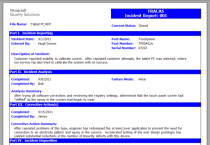

Windchill FRACAS
formerly Relex FRACAS
Windchill FRACAS is a web-based system that manages incidents from diverse sources, including test and field, and captures information important for design, reliability, quality and safety. Also known as DRACAS, PRACA or CAPA, FRACAS streamlines the problem resolution process and turns individual experience into institutional knowledge that can be leveraged on future design efforts. Develop, organize and implement a closed-loop corrective action plan to address failures and prevent their recurrence.
Process Efficiency. The strength of Windchill FRACAS resides in its extra features built in to make your processes more efficient. Workflow capabilities allow you to define your specific process flow and control when notifications are sent to appropriate personnel. Supplied and ad hoc queries enable you to quickly see snapshots of your data any way you choose. Alerts (watchdog) provide a proactive data query to identify and notify personnel of defined conditions. Windchill FRACAS allows you to spot trends early, prioritize issues or problems, and ensure individuals or groups are notified of progress.
Built-in Flexibility. Windchill FRACAS includes support for industry standard problem resolution processes such as 8D problem resolution, Six Sigma DMAIC and others. Modify the standard methodology to suit your specific needs, or implement your unique company methodology using wizard-based design tools that require no programming skills. Control the entire look and feel of the user interface, configure workflow, define choice lists, enforce checkpoints for review and approval and much more. To help you get the most value from your investment, with quick deployment, Crimson Quality offers and optional FRACAS Quick Start service.
 Professional Outputs. Windchill Prediction is supplied with a range of industry standard reports and graphs. Easy-to-use Report and Graph Wizards provide complete user customization of outputs to fit your specific needs, without the need for IT experts. Once complete, reports and graphs can be printed or saved directly to Microsoft Word or Excel, and Adobe PDF.
Enterprise Capabilities. For large scale or distributed deployments, the powerful features of Windchill FRACAS are also available in a zero-client, web-based interface with role based permissions, audit capabilities, automated workflow and dashboards. Support for both Microsoft SQL Server and Oracle, with an API for customizable data connectors, enables improved integration with existing business systems.
FRACAS Data Sheet
6468_Windchill_FRACAS_DS_EN.pdf
Adobe Acrobat document [292.8 KB]